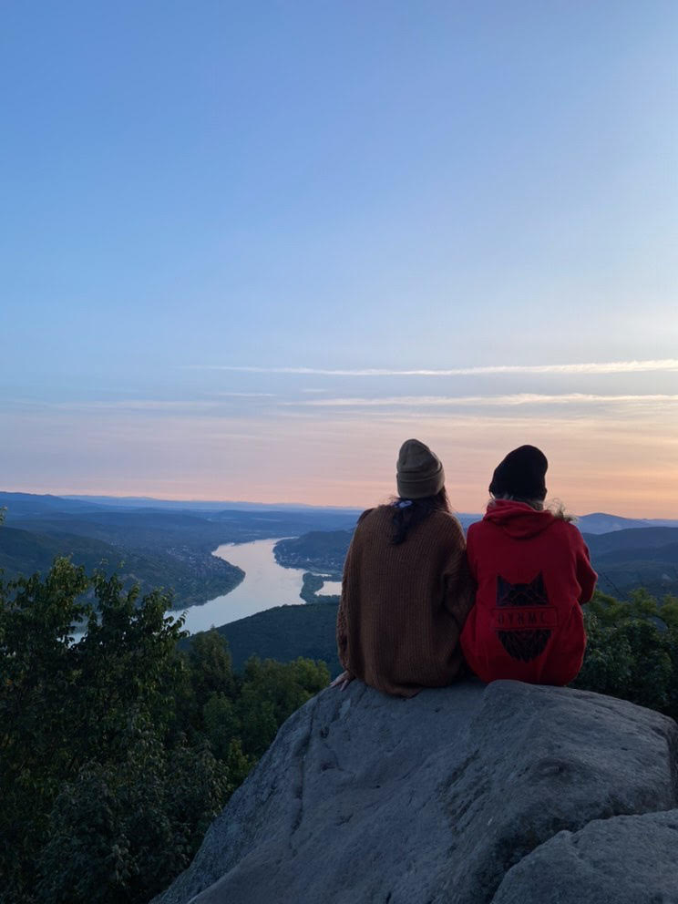

<!DOCTYPE html>
<html>
<head>
	<title>Pásztor Blanka portfóliója</title>
	<link rel="stylesheet" type="text/css" href="portfoliocss/home.css">
	<link rel="stylesheet" href="https://fonts.googleapis.com/css?family=Special Elite">
</head>
<style type="text/css">
	body{
		background-image:url(portfoliofenykepezes/ujsaghatter.jpg);
		background-repeat: no-repeat;
		background-size: cover;
		background-attachment: fixed;
		font-family: "Special Elite", sans-serif;
	}
</style>
<body>

	<footer>
	<h1>
		Pásztor Blanka portfóliója
	</h1>
	
<p>
  <h2>Pár szó magamról</h2>
	<p>A Budapesti Műszaki és Gazdaságtudományi Egyetem Gépészmérnöki karán az Ipari termék- és formatervező mérnöki képzésén kezdtem el egyetemi éveimet.
		<p/>
			<div class="gomb"> <a href="Boronkay.html"> Boronkay György Műszaki Szakgimnázium és Gimnázium </a> </div>
			<div class="gomb"> <a href="Hobbiaim.html"> Hobbiaim </a> </div>
			<div class="gomb"> <a href="hogyankeszult.html"> Hogyan készült? </a> </div>
</p>	
</footer>
</body>
</html>
